Light Bot
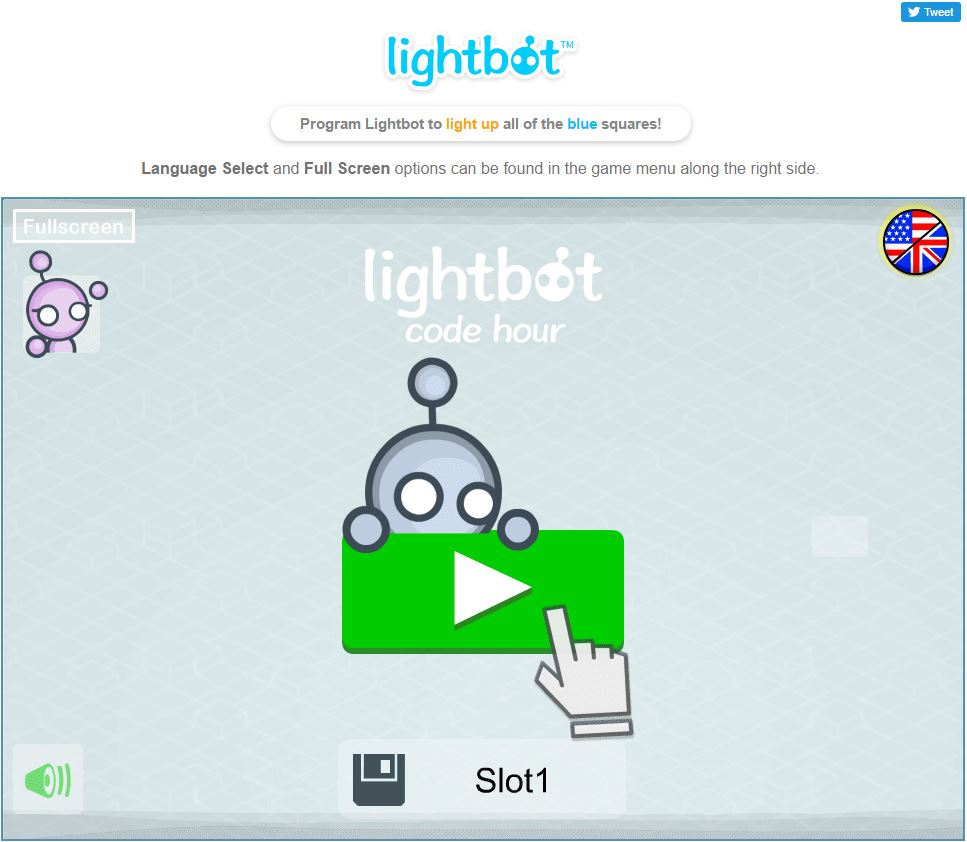
This was one of the first projects that we did during the first semester. Light Bot was a very simple game that taught us some of the basics of coding, like loops. It was very short and easy to finish, but it was still cool none the less.
One of my favorite parts about this assignment was that it was a game, which interested me more that if it were just research.
Link to LightBot!
Scratch
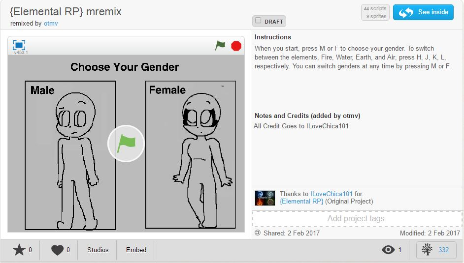
This assignment was one of the first big projects that we had gotten. We had been messing around with Scratch for a while, but then we were assigned a project to remix an already made project on Scratch. What this meant was that we had to
take something that was already made on Scratch and then add code to it, or completely rework it, while keeping the same concept. This project was pretty fun to do, especially since I had a partner to help me. What we did was take a role
playing type of game, and then expanded on that.
Link to our Scratch project!
App Inventor
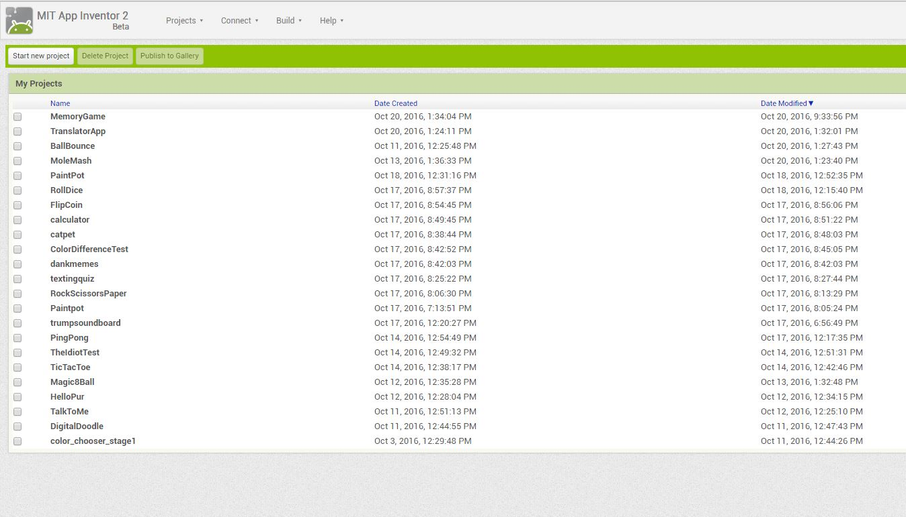
This was one of the harder projects that we have done during my time in this class. At first, we just had to make very simple apps, but then we were assinged the task to make a large app as a group. The app we decided to do was an app that
gave you healthy cheap options for food. We only did the basics for the app, but that was only because we weren't given enough time to finish it.
Link to App Inventor Installation Page!
Khan Academy

Khan Academy is one of those websites that almost everybody knows about. For this assignment, we had to use Khan Academy to learn how to code with CSS and HTML. This took about a week to do, and was fairly simple. The website would give us
videos that would teach some code, and then it would give us a challenge to do that would use the same code in the video. This assignment was pretty fun, but at the same time it was also pretty easy.
Link to Khan Academy!
GitHub
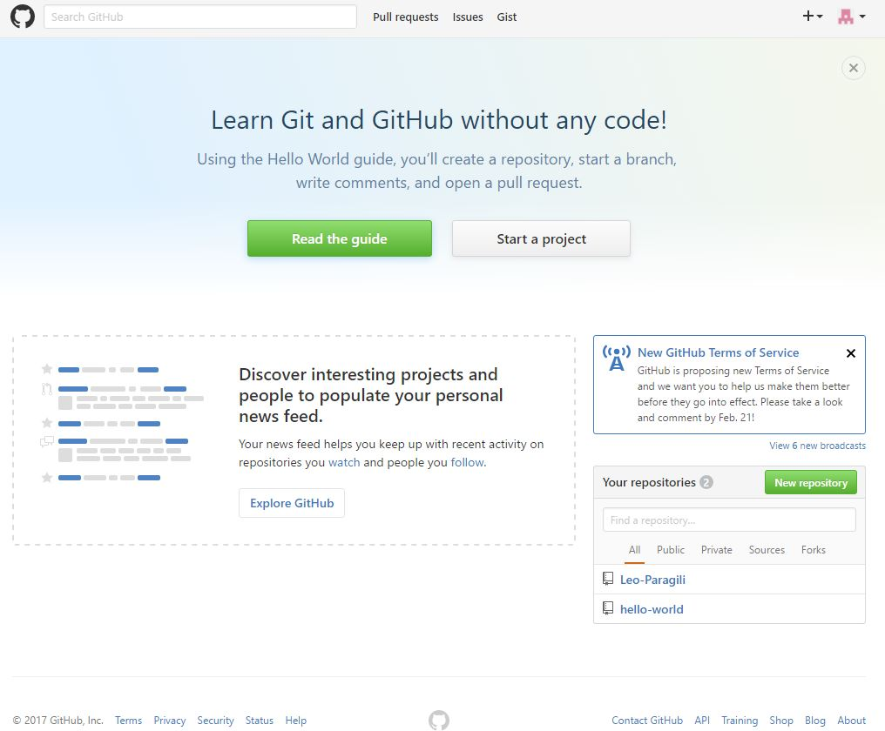
GitHub is a website that allows people like you and I to make websites using HTML and CSS, and it also allows us to publish them. In my opinion, I really like
GitHub. It's very easy to use and simple to learn. The assignment that we had to do with this is to create a repository, which allow me to do what I am currently doing. If you didn't know, this entire page was created using GitHub.
Link to GitHub!
Notepad++
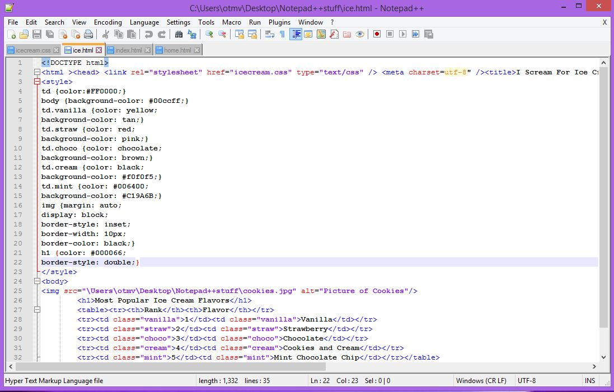
This is one of the most recent assignment that we have done, aside from making this webpage. What we had to do is make a couple of websites using the app Notepad++. These websites were very simple and easy to make, but they did help to
refresh my memory, since we did this after we came back from Winter break. Personally, I love being able to code with HTML and CSS. I find it very amusing and productive.
Link to the Notepad++ website!
Code Combat
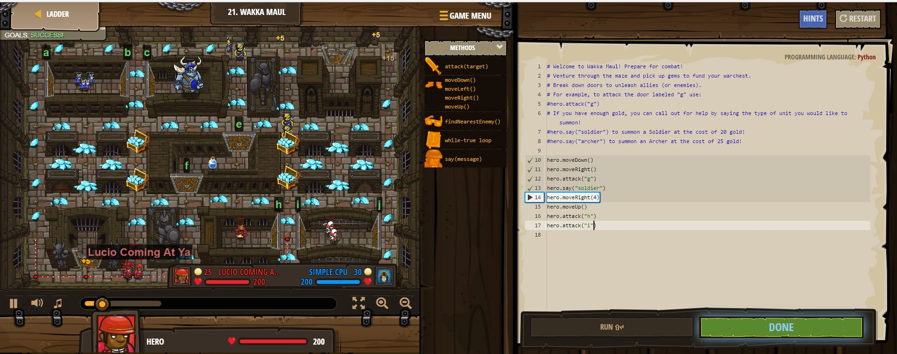
This is the most recent assignment that we have done in this class. This was supposed to introduce us to python, which is another language used for programming. This game was pretty fun to play, because it constantly made you think about what
you had to do next to complete the level. I had a great experience with this game, and I would not mind replaying it or even going into more complicated code.
Link to Code Combat!
Enthought Canopy
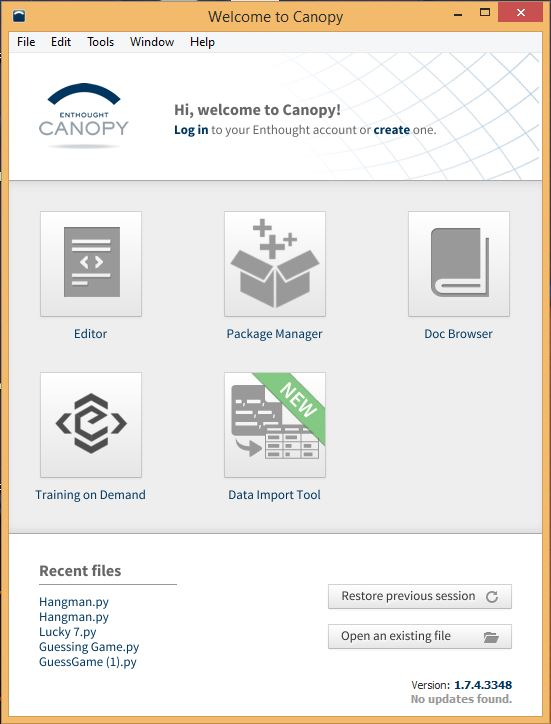
Canopy was a program that allowed us to code in python. We used this application to create three different games: Lucky 7, Hangman, and a Guessing Game. These games were interesting to make because they were all so different from each other. Each game had its own properties that
made it unique. Creating these games was a fun experience, and I hope to continue with Python so I can get better at doing these types of things.
Link to the Enthought Canopy download!
Guessing Game
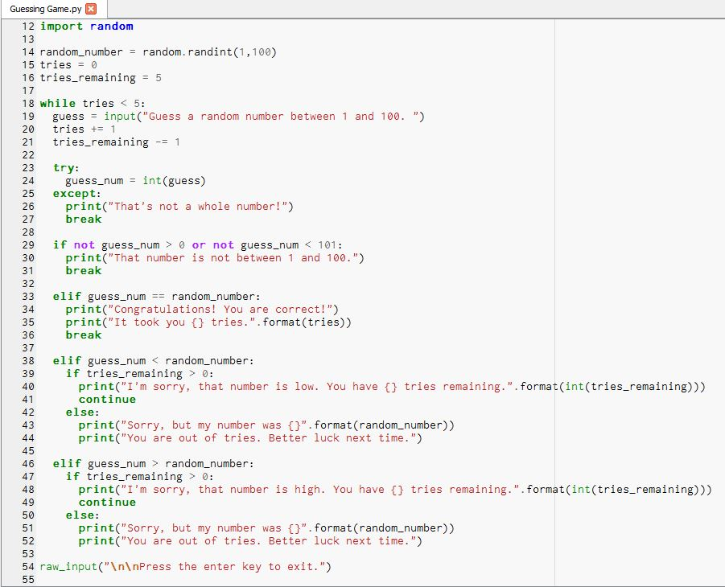
This game was fairly easy to make, because the concept was very simple. The game requires you to guess a number between 1 and 100 within a certain amount of tries. If you guess the correct number, you win, but if you don't, then you lose.
Lucky 7
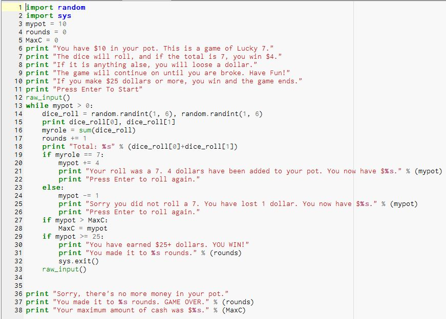
This game took less coding, but was a whole lot more complicated to make because it had to do with a lot of randomness. The basic gist of the game is that you start of with a set amount of cash, and roll a pair of dice. Each roll costs a dollar, and for every seven that you roll, you
gain four dollars. If you go broke, you lose the game, but if you are able to gain twenty-five dollars or more, you win. It is a complete game of chance.
Hangman
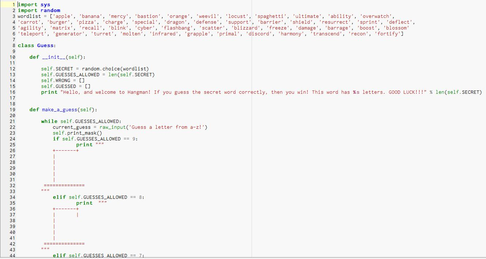
Of all of the games that we created on Canopy, this one ws the hardest. The game is supposed to choose a random word from a pre-made list, and then give you an amount of tries based on the amount of letters from the chosen word. The game prints out a hangman graphic after each turn,
and each time you get a letter wrong, you get closer to losing. After you either guess the word and win, or fail to guess it and lose, you are given the option to play again with a new word.
Repl.It
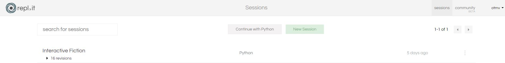
Repl.it was an online website that we used to code using python. Since this was online, it meant that we could code at home, making things a whole lot easier. Not only did this website have python, but it also had languages like Javascript and C++. However, we only used python to
create a story game with different pathways.
Link to the Repl.It Website!
Interactive Fiction
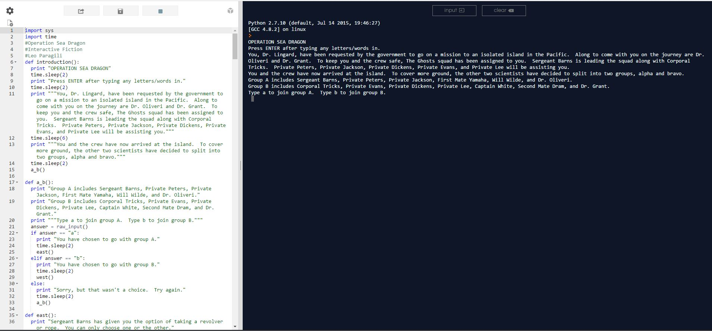
Our most recent assignment was to create a narrative game in python that allowed us to take different pathways, eventually leading us to different endings. My game was called Operation Sea Dragon, and it is about a scientist that is sent on an expedition to an isolated island with other
scientists. Once you arrive, you are split into different groups, and each group has its own events that lead up to the discovery of an island monster. Once you are confronted by the monster, your decisions determine whether you live to get off the island or die trying.